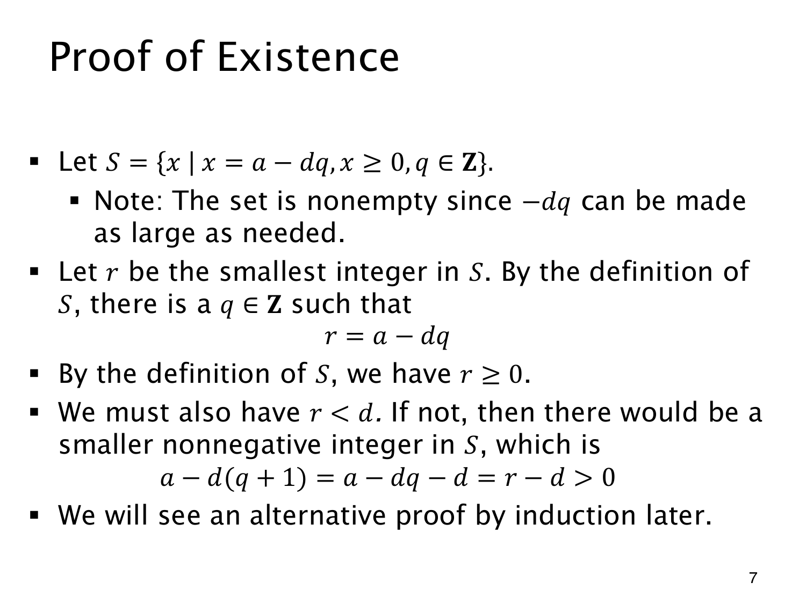

L1.12 · 第 7 页讲解原文
查看这一页课件

从最小非负差值找到余数
固定整数 a 和正整数 d，把可能的非负差值收集起来：
S={a−dq∣q∈Z, a−dq≥0}.
q 可以取得足够负，使 −dq 足够大，因此 S 非空。非负整数的良序性质保证它有最小元素，记为 r。根据集合的定义，有某个整数 q 使 r=a−dq，于是 a=dq+r，且 r≥0。
还差余数的上界。若 r≥d，把商从 q 增加到 q+1，就得到
a−d(q+1)=r−d≥0.
这个数仍在 S 中，却因 d>0 而小于 r，与 r 最小矛盾。所以 r<d，所需的商和余数确实存在。
原幻灯片这里写成 r−d>0，应读作 r−d≥0。特别是 r=d 时，差为零；零也允许属于 S，反证仍然成立。以上论证解决了存在性，唯一性还需另外证明。页末提到以后还会用归纳法给出另一种证明。